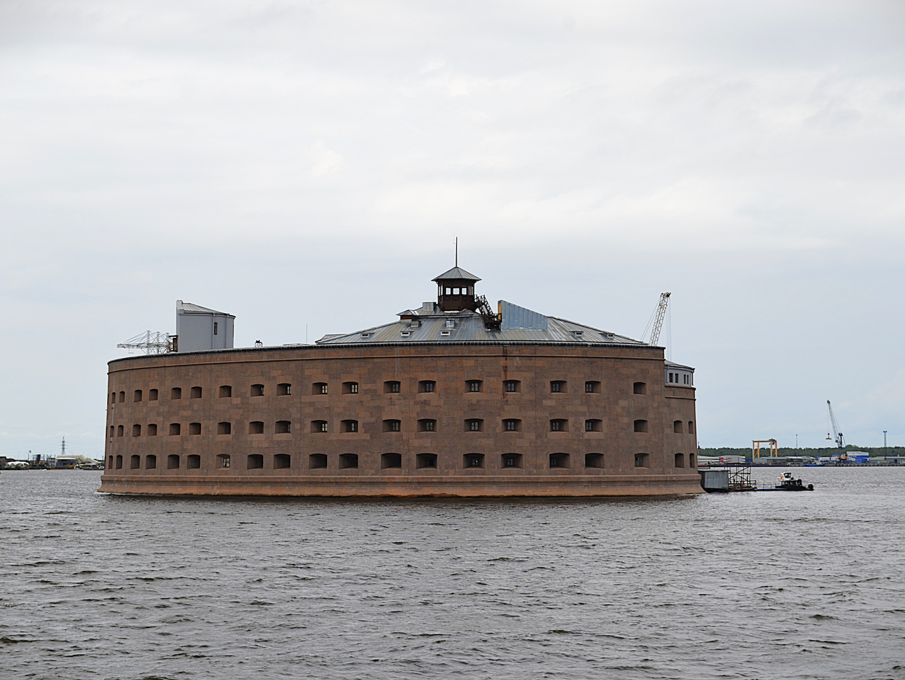

История форта Александр I
Форт «Алекса́ндр I» — одно из долговременных оборонительных сооружений, входящих в систему обороны Кронштадта. Расположен на небольшом искусственном островке к югу от острова Котлин. С 1899 по 1917 год использовался как лаборатория по исследованию чумы.
Архитектура и устройство
Это был типичный казематированный морской форт того времени. Форт представлял собой овальное здание 90 на 60 метров, с тремя этажами и двором в центре. Общая площадь составляет более 5000 квадратных метров. Места в крепости было достаточно, чтобы держать гарнизон до 1000 человек. Форт был вооружён 103 орудиями, в число которых входили и новейшие трёхпудовые бомбические пушки.
Советский период
С 1923 года укрепление снова перешло в руки военных, которые создали там склад минно-трального оборудования. К 1983 году крепость была заброшена. Примерно тогда же во время съёмок фильма «Порох» в результате нужного по сюжету пожара форт выгорел.